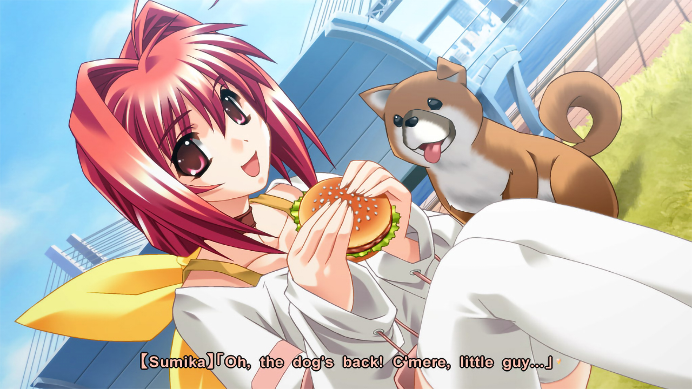
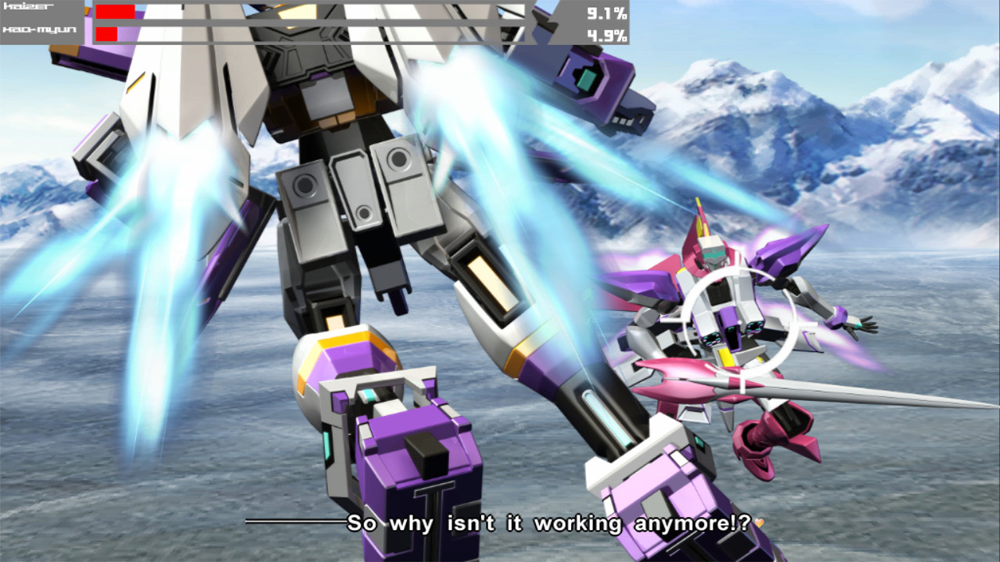
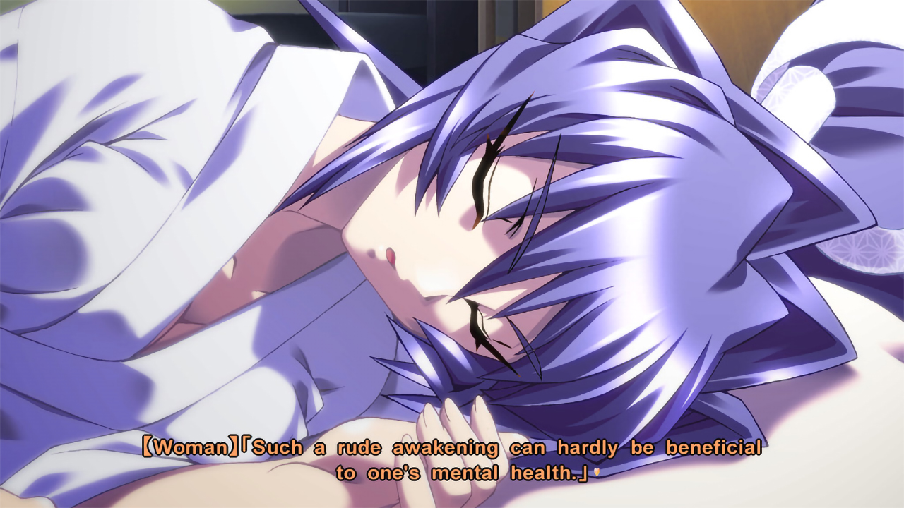
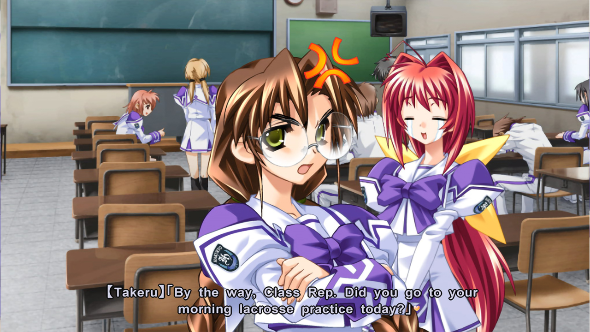
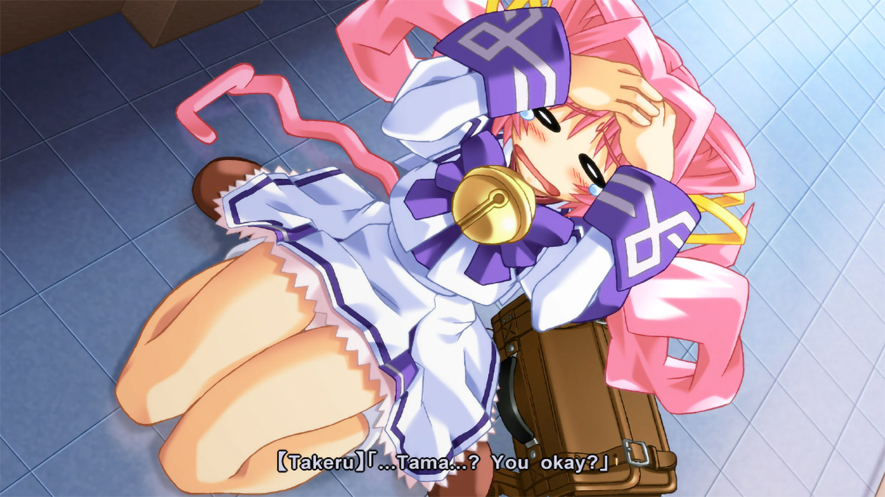
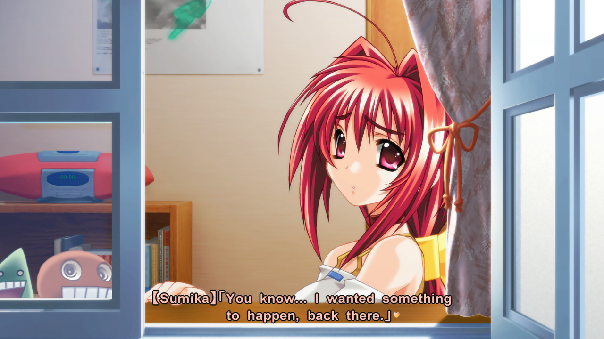
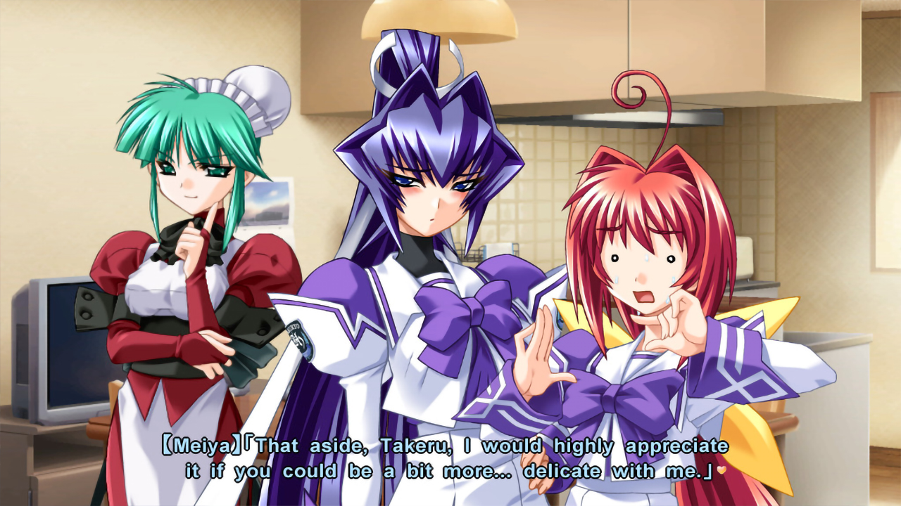

Muv-Luv
Release Date:
July 15, 2016
Developer:
Publisher
Genres:
Romance, Comedy
Novel Length:
Anime Adaptation:
None
Prequel:
None
Sequel:


Reviews
"Muv-Luv and Alternative will gradually push you to the ropes with an innocent smile, and then repeatedly punch you in the heart with unprecedented savagery."
"A deeply emotional and often hilarious game, Muv-Luv is the standard by which all other visual novels should be judged. The story-telling and characterization, though intentionally cliche at times, are unparalleled. Do not pass up this masterpiece."
"If you're looking for a game that pulls you in for the long haul, Muv-Luv is the game for you."
About This Novel
This game consists of two parts: Muv-Luv Extra and Muv-Luv Unlimited. Unlimited is unlocked after you get the endings of the two main heroines (Sumika and Meiya) in Extra.
In Muv-Luv Extra, Shirogane Takeru is a typical high school student with a lazy attitude and a love for the virtual reality mecha battle game Valgern-on. Even though he didn't really want it, he is popular in school mainly due to his daily fights with his osananajimi (Sumika) attracting too much attention. His life takes an unexpected turn when he finds a girl (Meiya) he doesn't remember ever meeting in his bed one morning. That girl is later revealed to be the heiress of one of the biggest zaibatsu. She immediately moves to his house and starts changing his life for the good with her one-track-mind and unlimited esources...
Muv-Luv Extra, the main part of Muv-Luv, takes place in the same world (and general area) as Kimi ga Nozomu Eien and Kimi ga Ita Kisetsu. The Sky Temple family restaurant is mentioned and visited, and Suzumiya Akane makes an appearance.
In Muv-Luv Unlimited, Takeru wakes up late, wondering why Sumika or Meiya didn't wake him up this morning. Not seeing any signs of them he gets a bit worried and exits his house to find them. The situation he is confronted with is an apocalyptic hellscape, something so obscene that it could have only been produced by some unpleasant dream. Deciding that this is indeed the case, Takeru decides to explore this "dream" to the fullest...
(From VNDB)
Technical Details
Platforms:
Windows, Vita
Resolution:
16:9
English:
Fully Translated
Animated Scenes:
Some Full Animations
Voiced:
Fully
You Might Also Like


Get It Now

Recommended
Get It